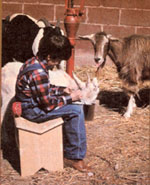
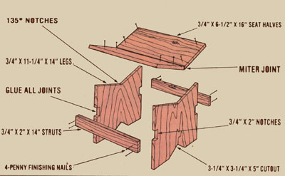

This shop project is simplicity itself, and produces a danged useful "sitter".
If you've ever been stuck without a sturdy support to sit on, you'll appreciate this simple stool . . . based upon a design that's been used, for ages, by the Zapotec Indians of southern Mexico. To make one, round up a five-foot length of 1 X 12 (old shelving is fine), 16 four-penny finishing nails, some white or yellow carpenter's glue, a ruler, a protractor, and a saw.
Start by cutting the board into two 14" and two 16" lengths, then trim a V-shaped 135° notch in one end of each 14" section as shown (you can also remove a decorative 3-1/4" X 3-1/4" X 5" wedge from the opposite end of the two components, if you wish). Next, from each of your remaining two pieces of lumber, cut two (lengthwise) parts: the first 6-1/2" wide . . . the other only 2" wide and lopped down to 14" in length. Now place one of the 6-1/2" X 16" seat halves, temporarily, into position on one slope of the V-notch, and mark the inside edge of the slanted board so you'll be able to trim off an appropriate-sized sliver (in order to allow the plank to meet its "mate" smoothly). Repeat the process with the other seat portion to complete the mitered V-joint ... then fashion two 3/4" X 2" notches in each of the stool's leg planksmidway between top and bottom-to accommodate the struts.
With all the pieces trimmed to size, assemble your project by simply "whitegluing" the parts together and securing them with finishing nails, as illustrated in the drawing. (Yes, the seat is supposed to extend beyond the legs slightly!) After giving it a light sanding, you'll find that this very uncomfortable-looking stool is actually a pleasure to sit on . . . because the handmade hassock was designed with the behind in mind!
|
 |
 |
|